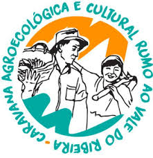

About me
Who am I?
"I have been trying to answer this question for some time now, but the more I discover the more questions I have."
My Interests
- Agriculture
- Agroecology
- Permaculture
- Economics
- The Energy Grid
- Renewable Energy
- Smart Grid
- Land Use
- Changes in Land Use
- Conservation vs. Preservation
My Hobbies
- Gardening
- Capoeira Angola
- Yoga
- Yoga
My Skills
- Team leadership / teamwork
- Self-directed / independent
- Oral Communication and Technical Writing
- Problem solving; conflict management among individuals and groups
- Tri-lingual: English, Spanish, Portuguese